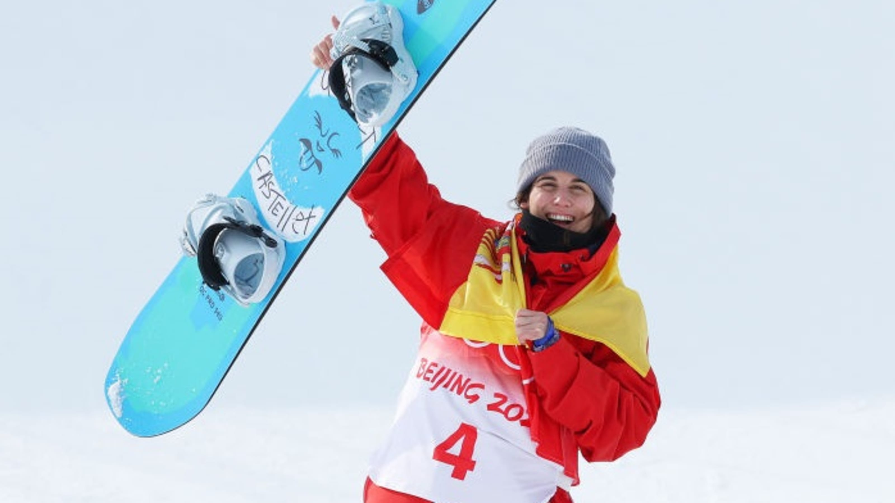
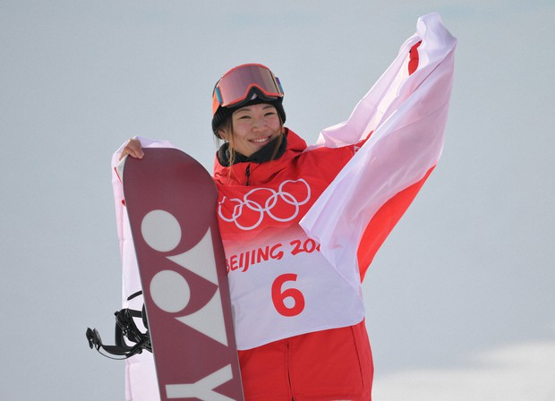

/* Background image: Chloe Kim of the United States reacts on the podium after winning the gold medal in the Women’s Snowboard Halfpipe by Tim Clayton at https://www.cnbc.com/2022/02/10/snowboarder-chloe-kim-wins-historic-2nd-olympic-halfpipe-gold.html, CC BY-NC-ND. */
Top Run:
must be viewed on YOUTUBE
Silver Medalist: Queralt Castellet
Country: Spain
Score: 90.25

/* Background image: Queralt Castellet by Getty Images at https://olympics.com/en/news/queralt-castellet-spain-snowboard-olympic-silver-, CC BY-NC-ND. */
Top Run:
Bronze Medalist: Sena Tomita
Country: Japan
Score: 88.25

/* Background image: Sena Tomita of Japan smiles after winning the bronze medal in the women's snowboard halfpipe final at the Beijing Winter Olympics by Toshiki Miyama at https://mainichi.jp/english/articles/20220210/p2g/00m/0sp/039000c, CC BY-NC-ND. */